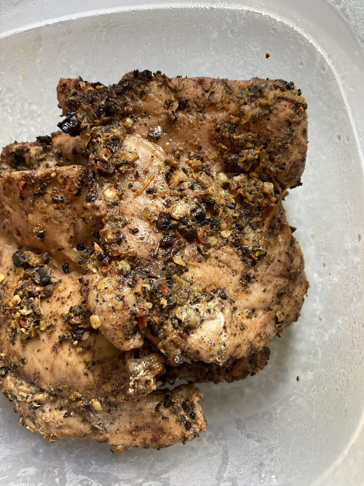

Spicy Chicken Jerk

Description
Been working on this recipe since I got addicted to Walkerwoods paste. Started reading more about it and seemed to find a recipe that worked with few ingredients and a little prep work. Been tweaking and feeding to friends who want more. Took a bunch of pics one day to help a friend who didnt understand some of the steps. Used that to help make a visual recipe for y'alls. Including the text recipe here too:
Ingredients
- 2 oz Whole Allspice/Pimeto
- 1 oz Sichuan Peppercorns
- 1 oz Black Peppercorns
- 4-6 Cloves of Garlic
- 10-12 Scotch Bonnet Peppers (can use other super hots like habeneros in equal weight/size)
- 2 Oranges
- 8-10 Chicken Thighs (preferably boneless and skinless)
Steps
- Prep the Paste:
- Take a large bowl and set aside for adding ingredients.
- Add Allspice, Szechwan and Black peppercorns to a large pan.
- They should not be crowded so you can shake them around.
- Roast them in the pan until they; start to smoke, darken in color, and some of the peppers pop from the heat.
- Turn the heat off at this point and ready a mortar and pestle.
- Add the set of spices in batches so not to over crowd.
- They should be changed about three times.
- Pound the mix into powder and add each batch to the large bowl.
- Roast garlic cloves and peppers in the oven or grill.
- Turn peppers over as they develop dark spots.
- Take out after 10-15 minutes when they are a dark color for much of the outside.
- Add roasted garlic cloves, peppers, and a pinch of kosher salt to a molcajete, larger mortar and pestle, or food processor.
- Pound and mash, or like, hit a button, to make the combination into a paste.
- Scrape the sides at intervals to combine well.
- Add the paste to the large bowl.
- Zest two oranges over the spice and paste mixture.
- Juice one orange into the mixture.
- Mix paste mixture well.
- See how thick the paste is a this point.
- To be thinner and less pasty add the juice of half the other orange.
- Mix and adjust as needed.
- Apply to Chicken:
- Glove up. Y'all hands getting all up in the chicken and paste. Your hands will thank you.
- Prepare your chicken line, your chicken to be jerked, spice paste, and container to hold the chicken.
- Apply a thin later to the chicken all over and place it in the container.
- Fold thighs in on them selves so they fit better in their container.
- Marinade chicken at least 30 mins in the refrigerator.
- Use tongs to apply to heat. Grill for best results.
- Oven and broil and other methods are also acceptable.